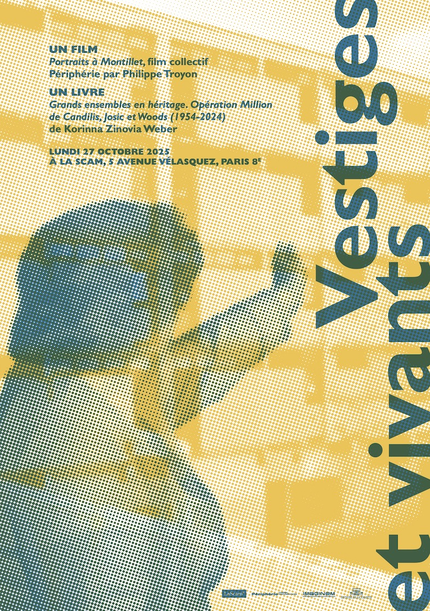

Construire un trois-pièces pour moins d’un million d’anciens francs (environ 23 000 €). Tel est l’objectif de l’opération Million lancée en France en 1954 par le gouvernement; la crise du logement est alors à son apogée.
L’agence de Georges Candilis, Alexis Josic et Shadrach Woods remporte le concours organisé l’année suivante et construira près de 4 300 logements sur vingt-huit sites. Tour à tour enquête et plaidoyer,
l’ouvrage de Korinna Zinovia Weber relate cet épisode majeur et méconnu de la construction des années d’après-guerre et milite pour que les grands ensembles soient reconnus en tant que patrimoine architectural.
Que reste-t-il de l’opération Million soixante-dix ans après sa mise en oeuvre? Partant du terrain, l’autrice dresse un état des lieux, fait le relevé des bâtiments, ausculte leur matérialité, retrace leurs transformations successives:
rénovations plus ou moins lourdes, démolitions partielles ou totales. Elle revient sur la genèse de l’opération et souligne la pertinence des choix architecturaux d’origine: organisation des bâtiments, typologie des logements, innovations constructives.
Sensible et engagée, Korinna Zinovia Weber nous conduit au cœur de l’opération Million à la rencontre de toutes ses parties prenantes, sans oublier les habitants mobilisés pour sauvegarder leurs lieux de vie face aux intérêts financiers et politiques.
Dénuée de tout fétichisme pour l’architecture moderne, l’autrice construit une connaissance utile et opératoire sur les grands ensembles, et nous invite à réapprendre à les transformer et à les habiter dans le contexte de ce premier quart du XXIe siècle confronté à une double crise, du logement et du climat.
Sortir du tiroir universitaire
Entre 2016 et 2019, j’ai préparé un doctorat en architecture à l’EPFL, porté par une profonde curiosité: comprendre pourquoi les logements économiques de l’après-guerre — à travers la figure de Georges Candilis, en particulier — sont si mal considérés, et surtout pourquoi ils sont si souvent mal réhabilités. Cette problématique ne se limite pas aux bâtiments édifiés dans le cadre de l'Opération Million.
Dès le départ, j’étais convaincu que la recherche que je menais ne devait pas finir dans un tiroir universitaire — une recherche pour la recherche, comme c’est malheureusement trop souvent le cas. Je voulais qu’elle serve à d’autres qu’à moi: habitants, architectes, bailleurs, etc., afin de mieux comprendre l’état actuel de ces bâtiments et leur histoire, et de s’appuyer sur cette connaissance au moment d’en décider l’avenir, souvent fragile. Cette recherche m’a mené en Île-de-France, dans les banlieues, dans des archives, à Marseille, à Athènes, sur l’île d’Égine… J’ai rencontré des personnes formidables: des habitants, des architectes, des témoins ayant connu les concepteurs d’origine, des artistes, des cinéastes...
Après avoir soutenu ma thèse avec succès en 2019, Tom Avermaete — qui a également travaillé sur Candilis et qui écrira plus tard la préface de mon livre — m’a donné un conseil d’or: “Let it season a bit like fine wine” (laisse-le maturer comme un bon vin). Ce conseil m’a permis de prendre du recul, de mettre de la distance et de relire mon travail avec un regard critique. En 2020-2021, j’ai tout réécrit pour un public plus large: j’ai restructuré le manuscrit, l’ai condensé et j’ai élagué tout ce dont le monde hors du cadre universitaire se fiche (l’“état de l’art”, l’avalanche de références destinées à satisfaire un jury, etc.). Le manuscrit a été accepté avec des éloges par le comité de lecture des Éditions de la Villette. Après quelques années d’attente — la Covid ayant aussi ralenti le monde de l’édition —, l’ouvrage paraîtra en 2025.
Un livre a déclenché cette recherche: Bâtir la vie, de Georges Candilis. Au bout de cette aventure (je n’aime pas parler de “fin”: une recherche n’est jamais vraiment terminée), un autre livre a vu le jour: le mien, Grands ensembles en héritage, à paraître aux Éditions de la Villette en 2025. Peut-être inspirera-t-il, lui aussi, quelqu’un à regarder le monde autrement?
Vestiges et Vivants: un film, un livre
Un événement de Philippe Troyon et Korinna Zinovia Weber

Graphisme: Philippe Le Bihan
Le passé croise l’actualité sans perdre de pertinence: les
portraits des habitants de la cité Montillet au Blanc-Mesnil, filmés entre la démolition
de la cité construite par Candilis-Josic-Woods et leur relogement, ont imprégné la recherche
scientifique menée vingt ans plus tard sur cette architecture oubliée, essentielle au quotidien de nombreux
habitants. L’habitat n’est pas qu’un agencement de murs mais aussi de vivants qui habitent parfois des vestiges, une
réalité que la politique oublie bien souvent.
Ceci pourrait aussi vous intéresser:
Vous souhaitez réaliser votre projet de livre? Je serai ravi de vous accompagner dans votre projet !